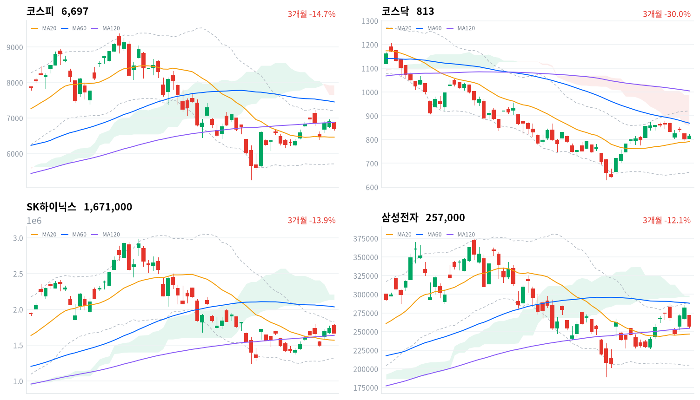
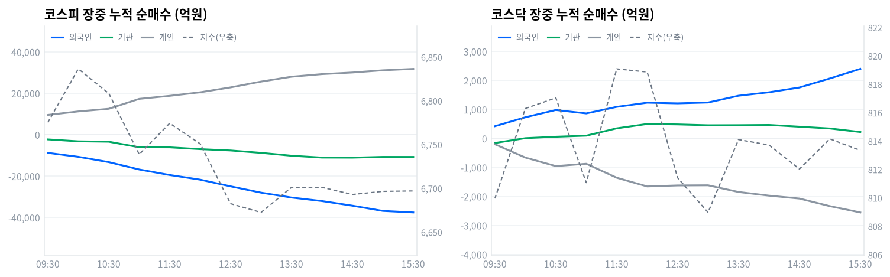

삼성전자가 시장 기대치를 밑도는 110조원 규모 주주환원을 발표하며 -8.69% 급락해 코스피를 끌어내렸다. 외국인·기관이 대형 반도체주를 동반 매도한 반면, 코스닥은 구리 가격 강세를 등에 업은 비철금속·전기제품 로테이션으로 나 홀로 상승했다.
개인은 코스피에서 저가 매수에 나섰지만 외국인·기관의 매도 규모를 넘어서지 못했다. 코스피 대형 반도체 비중은 다음 세션까지 축소하는 것이 합리적이다.
오늘의 행동. 코스피 반도체 대형주 비중을 다음 세션까지 축소한다. 삼성전자가 주주환원 실망으로 8.69% 급락했고, 시가총액 1위인 만큼 지수 낙폭(3.12%)을 끌어내린 축이었습니다. 종목별 지수 기여도는 이 데이터에 없어 몫을 정확히 나누지는 못합니다. 외국인과 기관은 코스피에서 각각 3조6,691억원, 1조2,901억원을 순매도했다(모두 당일 잠정).
왜 지금인가. 시장은 삼성전자의 주주환원 규모를 최대 150조원으로 기대했지만 실제 발표는 110조원에 그쳐 재료 소멸형 매물이 나왔다. 개인은 코스피에서 3조3,217억원을 순매수(당일 잠정)하며 대형주 저가 매수에 나섰지만 외국인·기관의 매도 규모를 감당하지 못했다. 코스닥은 비철금속(+7.84%)·전기제품(+6.54%) 로테이션에 힘입어 홀로 1.42% 올랐고, 두 업종 모두 폭넓은 상승이었다.
무효화 조건. 코스피가 120일선(6,873)을 다시 회복하면 오늘의 급락을 일회성 재료 소멸로 판단해 축소 포지션을 되돌린다. 반대로 20일선(6,461)마저 하회하면 추세 훼손으로 보고 리스크를 추가로 줄인다.
| 지수 | 종가 | 등락률 | 시가 | 고가 | 저가 | 전일 종가 |
|---|---|---|---|---|---|---|
| 코스피 | 6,696.96 | -3.12% | 6,881.07 | 6,884.57 | 6,656.07 | 6,912.95 |
| 코스닥 | 813.33 | +1.42% | 804.27 | 821.96 | 804.27 | 801.94 |
코스피는 전일 종가(6,913) 대비 소폭 낮은 6,881에서 출발해 오전 한때 6,885까지 오르며 당일 고가를 만들었다. 이후 삼성전자 급락이 본격화하며 매물이 쏟아졌고, 09:30 6,775, 11:00 6,739로 낙폭을 키웠다.
정오 전후 낙폭이 더 커져 12:30 6,682, 13:00 6,672까지 밀렸고, 장중 저점은 6,656이었다. 오후 들어 낙폭을 일부 되돌리며 6,701 안팎에서 등락하다 6,697로 마감했다.
코스닥은 전일 종가(802)와 거의 같은 804에서 출발해 그대로 당일 저가를 만들 만큼 초반부터 매수 우위였다. 오전 중 상승폭을 넓혀 한때 822까지 올랐다. 정오 이후 좁은 박스권에서 등락하다 813으로 마감했다(+1.42%).
오늘 지수 흐름을 가른 것은 삼성전자 단일 종목이었다. 삼성전자는 이날 발표한 주주환원 규모가 시장 기대치를 밑돌며 -8.69%까지 밀렸고, SK하이닉스도 -3.41%로 동반 약세를 보이며 코스피 낙폭을 키웠다. 반면 코스닥은 비철금속·전기제품 업종이 구리 가격 강세를 등에 업고 랠리하며 반도체 조정과 반대 방향으로 움직였다.

코스피·코스닥·SK하이닉스·삼성전자 3개월 일봉에 이동평균(20·60·120)·볼린저밴드·일목균형표 구름대를 오버레이했다. 상승 캔들은 녹색, 하락 캔들은 적색으로 표시된다.
코스피는 20일선(6,461)을 웃돌지만 60일선·120일선(6,873)에는 못 미치는 혼조 배열로, 볼린저 상단(7,216)에는 아직 거리가 있다. 120일선을 되찾으면 볼린저 상단·20일 고점이 겹치는 7,216까지 여지가 열리고, 20일선(6,461)을 내주면 추가 조정 압력이 커진다.
코스닥은 20일선(791)은 웃돌지만 60일선·120일선에는 못 미치는 역배열 상태이고, 종가는 일목 구름 하단(857) 아래에 머물러 있다. 전환선(837)을 넘어서면 구름 하단까지 저항이 열리고, 20일선(791)을 이탈하면 기준선(755)까지 되돌림 위험이 있다.
SK하이닉스(167만원)는 120일선·일목 기준선이 겹치는 163만원대 지지를 지키며 20일선(157만원) 위에서 마감했다. 볼린저 상단·20일 고점이 겹치는 182만원대를 넘어서면 추가 반등 여지가 열리고, 163만원대 지지가 무너지면 157만원까지 되돌림이 나올 수 있다.
삼성전자(25.7만원)는 일목 전환선(25.8만원) 바로 아래서 120일선(25.4만원)을 지지선으로 붙잡은 채 마감했다. 전환선을 다시 넘어서면 되돌림이 이어질 수 있지만, 120일선이 무너지면 20일선(24.7만원)까지 열린다.
위 레벨은 20·60·120일 이동평균, 볼린저밴드, 일목균형표, 스윙 고저를 기계적으로 계산한 값이며 투자 권유가 아니다.
| 주체 | 순매수(억원) |
|---|---|
| 개인 | +33,213 |
| 외국인 | -36,764 |
| 기관 | -12,928 |
| 주체 | 순매수(억원) |
|---|---|
| 개인 | -2,604 |
| 외국인 | +2,417 |
| 기관 | +249 |
코스피는 개인이 3조3,217억원을 순매수(당일 잠정)했지만 외국인(3조6,691억원)·기관(1조2,901억원)의 순매도 규모를 넘어서지 못했다. 프로그램 매매의 비차익도 3조612억원 순매도로 방향이 같아, 오늘 하락이 폭넓은 투매보다 기관·외국인 자금의 조직적 이탈에 가까웠음을 뒷받침한다.
코스닥은 외국인(2,416억원)·기관(249억원)이 나란히 순매수(당일 잠정)하며 지수를 밀어올린 반면 개인은 2,604억원 순매도로 반대 방향을 탔다. 대형주 조정을 피해 자금이 코스닥으로 옮겨간 로테이션 성격이 짙다.

누적 순매수(억원), 정규장 09:30~15:30 30분 앵커 기준. 지수는 우측 축.
| 시각 | 코스피(억원) | 코스닥(억원) | ||||
|---|---|---|---|---|---|---|
| 개인 | 외국인 | 기관 | 개인 | 외국인 | 기관 | |
| 09:30 | 9,560 | -8,770 | -2,261 | -202 | 421 | -158 |
| 10:00 | 11,253 | -10,676 | -3,195 | -660 | 729 | 9 |
| 10:30 | 12,518 | -13,236 | -3,382 | -955 | 980 | 58 |
| 11:00 | 17,313 | -16,793 | -6,063 | -874 | 862 | 95 |
| 11:30 | 18,770 | -19,457 | -6,105 | -1,355 | 1,088 | 348 |
| 12:00 | 20,493 | -21,704 | -6,962 | -1,656 | 1,232 | 498 |
| 12:30 | 22,863 | -24,943 | -7,616 | -1,621 | 1,209 | 483 |
| 13:00 | 25,661 | -27,981 | -8,761 | -1,616 | 1,238 | 454 |
| 13:30 | 28,011 | -30,343 | -10,144 | -1,847 | 1,472 | 457 |
| 14:00 | 29,272 | -32,042 | -11,041 | -1,973 | 1,591 | 465 |
| 14:30 | 30,048 | -34,275 | -11,076 | -2,073 | 1,756 | 404 |
| 15:00 | 31,123 | -36,806 | -10,706 | -2,335 | 2,068 | 343 |
| 15:30 | 31,802 | -37,553 | -10,714 | -2,553 | 2,398 | 221 |
코스피 외국인 누적 순매수는 하루 종일 방향 전환 없이 09:01 1,600억원 순매도에서 15:10 3조7,670억원 순매도까지 단조롭게 불어났다 — 그날 단조 구간의 양 끝일 뿐 고점·저점은 아니다. 이는 코스피가 개장 직후부터 낙폭을 키워간 궤적과 같은 방향으로, 가격과 수급이 어긋나지 않았다. 개인은 반대로 09:01 2,227억원에서 15:10 3조1,990억원까지 순매수를 꾸준히 늘리며 외국인 매도의 반대편에서 저가 매수를 이어갔다.
기관 내부에서는 금융투자(프로그램·선물 연계)가 정규장 마지막(15:30) 기준 5,540억원 순매도로 기관 전체 매도의 절반을 차지한 반면, 연기금등은 같은 시각 1,515억원 순매수로 방향이 갈렸다. 이는 뒤이은 프로그램 매매 표의 비차익 순매도 규모와 결이 같아, 오늘 기관 매도가 정책성 장기자금이 아니라 프로그램 성격이 강했음을 뒷받침한다. 코스닥에서는 기관이 10:04 순매도에서 순매수로 전환해 12:06 515억원까지 늘었다가 정규장 마지막 221억원으로 줄며 마감해, 코스피와 반대되는 매수 우위를 보였다.
정규장 마지막 관측(15:30)과 당일 잠정치를 비교하면 코스피 외국인 매도는 3조7,553억원에서 3조6,691억원으로 소폭 둔화됐지만, 기관 매도는 1조714억원에서 1조2,901억원으로 오히려 커졌다. 코스닥은 방향 유지 속에 강도만 소폭 커져 개인·외국인·기관 모두 15:30 관측치와 당일 잠정치 차이가 크지 않았다. 다음 거래일에는 코스피 외국인의 매도 둔화가 이어지는지, 개인의 저가 매수가 계속되는지가 확인 대상이다.
| 시장 | 차익 순매수(억원) | 비차익 순매수(억원) | 전체 순매수(억원) |
|---|---|---|---|
| 코스피 | +1,183 | -30,612 | -29,429 |
| 코스닥 | +1 | +2,554 | +2,555 |
코스피는 비차익이 3조612억원 순매도로 전체 프로그램 순매도(2조9,429억원)를 사실상 주도했고, 차익은 1,183억원 순매수에 그쳐 방향에 큰 영향을 주지 못했다. 비차익은 방향성 바스켓 매매라 기관·외국인의 실제 매도 의도를 반영하는데, 앞서 확인한 외국인·기관의 순매도 방향과 일치한다.
코스닥은 비차익이 2,554억원 순매수로 지수 상승과 같은 방향이었고 차익은 1억원에 그쳐 존재감이 없었다. 이는 코스닥 기관의 정오 무렵 전환 이후 매수세와도 결이 같아, 오늘 코스닥 강세에 프로그램 자금이 실질적으로 가담했음을 보여준다.
| 순위 | 종목/ETF | 구분 | 거래대금 | 비고 |
|---|---|---|---|---|
| 1 | 삼성전자 | 개별주 | 8.46조원 | - |
| 2 | SK하이닉스 | 개별주 | 6.86조원 | - |
| 3 | 반도체 테마 ETF | 테마·롱 | 1.31조원 | 8종 합산 |
| 4 | 삼성전자우 | 개별주 | 1.27조원 | - |
| 5 | SK하이닉스 레버리지 | 레버리지·롱 | 0.40조원 | 2종 합산 |
| 6 | NAVER | 개별주 | 0.35조원 | - |
| 7 | 삼성전자 레버리지 | 레버리지·롱 | 0.27조원 | 2종 합산 |
| 8 | 한미사이언스 | 개별주 | 0.22조원 | - |
| 9 | 2차전지 테마 ETF | 테마·롱 | 0.21조원 | 6종 합산 |
| 10 | SK텔레콤 | 개별주 | 0.18조원 | - |
단위 백만원 원본을 조 단위로 환산. 같은 기초자산 ETF는 방향별로, 같은 테마 섹터 ETF는 테마별로 묶었으며 코스피200·코스닥150 추종 지수 ETF 및 그 레버리지·인버스, 해외 ETF는 제외했다.
삼성전자·SK하이닉스 두 종목 거래대금만 합쳐 15.32조원으로, 반도체 테마 ETF 8종 합산 1.31조원의 12배에 달한다. 오늘 반도체 매매는 업종 전체를 겨냥한 패시브 자금이 아니라 주주환원 발표라는 개별 재료에 반응한 직접 매매였다.
레버리지 상품인 SK하이닉스(0.40조원)·삼성전자(0.27조원)는 상위권에 올랐지만 두 종목의 인버스는 10위 안에 이름을 올리지 못했다. 급락한 하루에도 반등에 거는 자금이 하락에 거는 자금보다 많았다는 뜻입니다. 다만 이 거래대금에는 투자자 유형이 없어 개인의 몫인지는 확인되지 않습니다. 코스피 개인 순매수(3조3,217억원, 당일 잠정)와 방향은 같습니다.
업종별 세부 분류에서는 비철금속(+7.84%, breadth 65%)과 전기제품(+6.54%, breadth 61%)이 오늘 가장 폭넓은 상승을 이끌었다. 두 업종 모두 상승 종목 비중이 60%를 넘어 개별 종목 쏠림이 아니라 업종 전체가 함께 움직인 '폭넓은 상승 주도'로 분류됐다.
반면 창업투자(+3.23%, breadth 44%)는 상승률 자체는 상위권이지만 90개 종목 중 40개만 올라 '좁은 상승·개별종목'으로 분류됐다. 반도체는 이 목록에 아예 등장하지 않는데, 위 섹터 스니펫의 반도체가 1D 기준 -3.80% 하락한 것과 같은 방향이다 — 이 데이터셋은 상승 업종만 걸러내 하락 업종은 집계하지 않는다.
삼성전자는 이날 발표한 110조원 규모 주주환원 방안이 시장이 기대한 150조원에 못 미치며 25.7만원까지 -8.69% 급락했다. 거래대금은 8.46조원으로 시장 전체 1위를 지켰습니다. 다만 거래대금 자체는 매수와 매도를 구분하지 않으니, 급락과 함께 손바뀜이 그만큼 컸다는 뜻으로 읽는 편이 안전합니다.
SK하이닉스도 삼성전자와 함께 밀리며 167만원까지 -3.41% 하락했지만 거래대금은 6.86조원으로 2위를 지켰다. 반도체 테마 ETF(8종 합산 1.31조원)보다 개별 종목 매매가 압도적으로 컸다는 점은 오늘 반도체 조정이 업종 전반의 투매가 아니라 두 대형주에 집중됐음을 보여준다.
코스닥에서는 구리 가격이 사상 최고 수준까지 오르며 AI 데이터센터·전력망 수요發 비철금속 슈퍼사이클 기대가 부각됐고, 풍산·고려아연 등이 관련주로 거론된다(한국경제 보도). 비철금속(+7.84%)·전기제품(+6.54%) 업종의 breadth가 모두 60%를 웃돌아 소수 종목이 아니라 업종 전반이 함께 올랐다.
거래대금 상위에 오른 NAVER(0.35조원)·한미사이언스(0.22조원)·SK텔레콤(0.18조원)은 오늘 자로 확인된 개별 재료가 리서치 결과에서 확인되지 않아 구체 사유는 확정하지 않는다.
이번 kr/data 수집분에는 원/달러 스팟 환율 소스가 포함돼 있지 않아 이번 호는 국고채 금리만 다룬다. 한국은행 ECOS 기준 금리 데이터는 5개 항목 모두 결측 없이 수집됐다.
| 지표 | 금리 | 전일比(bp) | 기준일 |
|---|---|---|---|
| 국고채 3년 | 3.836% | -1.8 | 2026-08-24 |
| 국고채 10년 | 4.335% | -4.1 | 2026-08-24 |
| CD 91일 | 2.960% | +1.0 | 2026-08-24 |
| 회사채 AA- 3년 | 4.520% | -2.2 | 2026-08-24 |
| 한국은행 기준금리 | 2.75% | +25.0(전월比) | 2026-07 |
한국은행 기준금리는 월 단위로 발표되는 정책금리라 기준일이 2026-07(전월 6월 대비 25bp 인상)이며 report_date와 다르다. 나머지 네 항목은 2026-08-24 기준 시장금리다.
국고채 10년이 3년을 50bp 웃돌아 커브는 정상 형태를 유지했다. 전일 대비 스프레드는 52bp에서 50bp로 좁혀졌는데, 장기금리가 단기금리보다 더 크게 내리며(-4.1bp vs -1.8bp) 장단기 금리가 함께 하락하는 불 플래트닝이 나타났다.
회사채 AA- 3년(4.520%)과 국고채의 신용 스프레드는 68bp로 전일(69bp)보다 소폭 좁혀져, 코스피 급락에도 신용 심리는 안정적으로 유지됐다. 국고채 단기물(3.836%)은 기준금리(2.75%)를 109bp 웃돌아, 시장이 추가 긴축 경로를 어느 정도 선반영하고 있다는 뜻으로 읽힌다.
2026년 2월 25일 국회 본회의를 통과한 3차 상법 개정안은 자사주 취득 후 1년 내 소각을 원칙으로 하고 자사주의 의결권·신주인수권·배당권 등 주주권을 전면 제한한다(법률신문·Kim & Chang 보도). 삼성전자는 8월 21일 이 흐름 위에서 110조원 규모의 2026년 주주환원 방안을 의결·발표했다(한국경제 보도).
전달 경로는 거버넌스 할인, 즉 코리아 디스카운트 해소를 통한 멀티플 경로다. 소각 의무화는 유통주식 수를 구조적으로 줄여 대형주의 조기 소각·환원 확대 유인으로 작동한다.
다만 시장이 최대 150조원을 기대했던 것과 달리 발표 규모가 이를 밑돌며 삼성전자가 25.7만원까지 급락했다 — 거버넌스 개선 기대가 '이미 선반영'된 상태에서 숫자가 못 미치자 되돌림이 나온 사례다. 자사주 비중이 높은 대형 지주사·금융지주는 이번 흐름의 잠재 수혜 구간으로 남아 있지만 오늘 가격에는 뚜렷이 반영되지 않았다.
상장사 자사주 공시 의무를 전 상장사로 확대하는 후속 조치가 검토되고 있으나 구체 시행일은 일정 미확정이다. 다음 확인 트리거는 삼성전자의 자사주 매입·소각 세부 일정 공시 여부다.
국민연금은 최근 상장사 주주총회에서 자사주 취득 예외를 담은 정관 변경안에 반대표를 던진 사례가 나왔다. 미래에셋증권 건에서는 찬성률이 86.06%로 상대적으로 낮게 집계됐다(법률신문 등 보도 기반 리서치 정리).
전달 경로는 연기금의 거버넌스 감시를 통한 멀티플 경로다. 자사주를 경영권 방어 수단으로 써온 기업은 반대표가 쌓일수록 지배구조 할인이 유지되는 반면, 소각·환원에 적극적인 기업은 연기금 자금의 프리미엄을 받을 여지가 커진다.
오늘 코스피에서 연기금등은 정규장 마지막 기준 1,515억원 순매수로 대형주 저가 매수에 나섰지만, 이것이 거버넌스 판단에 따른 것인지 단순 저가 매수인지는 특정하기 어렵다. 국민연금의 의결권 행사가 개별 종목 주가에 미치는 영향은 아직 뚜렷하게 반영되지 않은 상태다.
다음 확인 트리거는 국민연금의 자사주 예외 정관 관련 의결권 행사가 다른 대형주로 확산되는지 여부이며, 구체 시행 일정은 확인되지 않아 일정 미확정으로 남는다.
한국은행은 7월 기준금리를 2.75%로 올려 전월(2.50%) 대비 25bp 인상을 반영했다(한국은행 ECOS 기준). 오늘 국고채 금리는 전일 대비 소폭 하락하며 채권 강세를 보였다.
전달 경로는 할인율 경로다. 긴축 기조는 채권금리를 통해 성장주·코스닥 밸류에이션을 압박하는 한편, 안전자산 선호가 강해지면 국채 강세로 연결된다.
오늘은 코스피가 급락하는 국면에서 국고채 금리가 함께 내려 안전자산 선호가 확인됐고, 회사채 신용 스프레드도 오히려 소폭 좁혀져 신용경색 조짐은 없었다. 반면 코스닥은 긴축 배경에도 비철금속·전기제품 로테이션에 힘입어 올라, 통화정책 재료보다 산업 순환매가 오늘 가격을 더 크게 움직였다 — '아직 반영 안 됨' 판정이다.
다음 금융통화위원회 일정은 이번 리서치에서 확인되지 않아 일정 미확정으로 남긴다. 확인 트리거는 국고채 단기물이 기준금리 대비 스프레드를 얼마나 유지하는지, 그리고 다음 금통위 스탠스 발언이다.